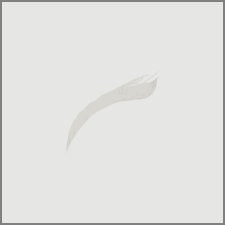

Untitled (200)
2022.03.09
a sleet of wings ran down my back
and a corsage of red broke down my nape
when i realized who i was.
i am the blank, my forever empty.
i am the space between
the blood and the asphalt
the being, the center of the shattered intersection
in wonder, an angel, a watcher, in halos.
i am the ever echo in the blinding stasis of death
and the whispers of comfort in the minds of tears.
fingers interlocked, halo ever glowing,
i choked its ring around your neck,
i bring you into my domain.
and so, in everything i say,
i am the blank, my forever empty.
and everything else,
forever be damned.
